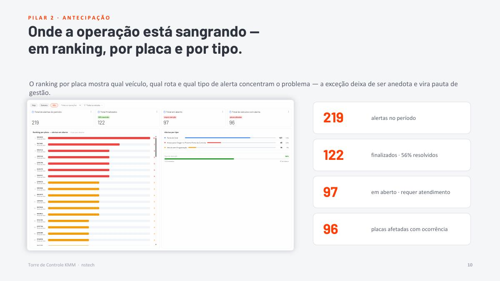
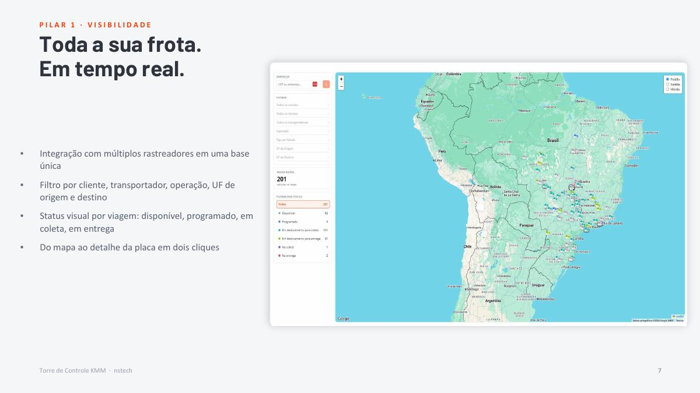
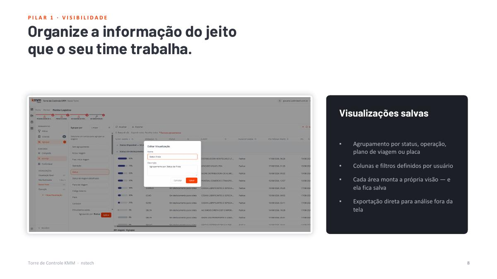
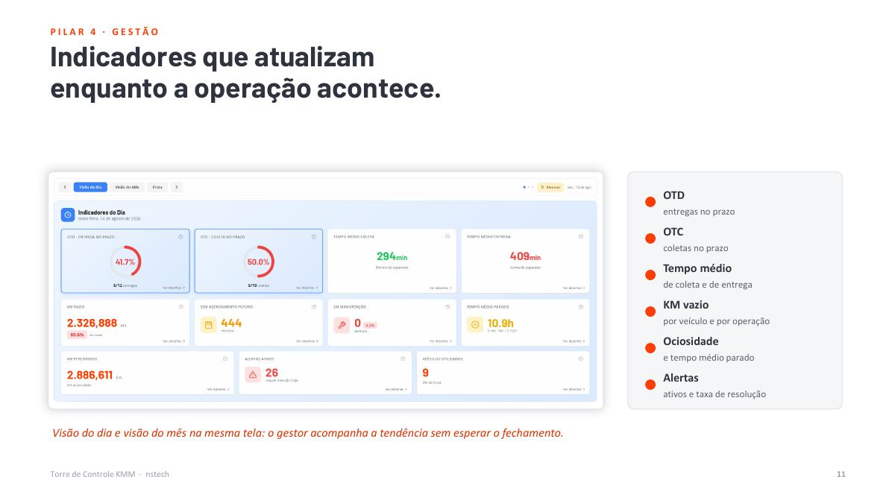
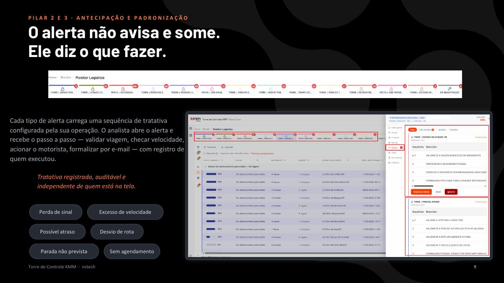
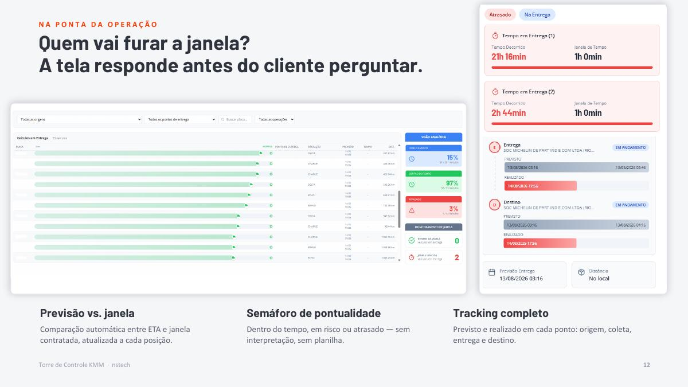

Da informação à decisão
Torre de
Controle KMM
Manual conceitual e operacional para compreender como dados de viagem, rastreamento, alertas e tratativas se transformam em previsibilidade e gestão.
ETA 14:35Parada detectadaEm viagem
Manual conceitual e operacional para compreender como dados de viagem, rastreamento, alertas e tratativas se transformam em previsibilidade e gestão.
É uma estrutura de gestão que centraliza dados da operação, monitora eventos e direciona ações enquanto ainda existe tempo para interferir no resultado.
Reagendamento, retenção, devolução e possíveis multas.
Ativo parado, capital imobilizado e oportunidades perdidas.
Tempo consumido buscando dados em canais dispersos.
SLA descumprido, desgaste e perda de confiança.
A Torre complementa o ecossistema existente. Ela não emite documentos, não administra faturamento e não substitui TMS ou rastreador.
Rastreador, aplicativo do motorista e localizador continuam sendo as fontes de posição.
A Torre lê o plano de viagem existente e acrescenta inteligência de gestão.
A posição é o começo. O valor está nos alertas, prioridades, tratativas e indicadores.
O ciclo transforma leitura de rastreador em ação operacional e aprendizado de gestão.
Uma visão integrada da frota, viagens, posições, status e ETA.
Alertas identificam condições de risco antes que o impacto se consolide.
Playbooks orientam o analista e tornam a resposta consistente e auditável.
Indicadores mostram nível de serviço, produtividade e recorrência.
Integração de diferentes rastreadores em uma base comum, com filtros e visualizações configuradas conforme a rotina de cada área.
Viagem: 84219
Placa: ABC1D23
Status: Em entrega
Última posição: BR-116, km 171
ETA: 14:35
Janela: 14:00–15:00
Interpretação: viagem dentro da janela, mas deve continuar sendo acompanhada.
Tracking é o acompanhamento da evolução da viagem em seus pontos operacionais, comparando o plano com o que realmente aconteceu.
Datas, horários, sequência de pontos, rota e janelas definidas no plano.
Posição atual, eventos, ETA e condição da viagem neste momento.
Horários efetivos, permanências, desvios, reprogramações e conclusão.
ETA é a previsão de chegada a um ponto. Janela é o intervalo acordado para atendimento. A comparação entre ambos orienta o semáforo de pontualidade.
Janela 14:00–15:00. Previsão dentro do intervalo.
Próximo do limite. Pequena variação pode gerar atraso.
Previsão posterior ao fim da janela.

Um alerta é uma condição identificada por regra. Ele precisa ter tipo, criticidade, contexto, responsável e estado de atendimento.
O veículo deixou de transmitir dentro do intervalo configurado.
A velocidade registrada superou o limite da regra.
O ETA indica risco de descumprimento da janela.
A posição se afastou do trajeto ou corredor esperado.
O veículo permaneceu parado fora de um ponto planejado.
Um atendimento necessário não possui janela registrada.

São conceitos conectados, mas diferentes. Separá-los é essencial para registrar o que ocorreu e o que a equipe fez.
Informa a condição: “ETA ultrapassou a janela”.
Registra a ação: “motorista contatado e cliente informado”.
Define a sequência: validar, contatar, formalizar, acompanhar e encerrar.
Confira última posição, horário do sinal, ETA, janela e ponto afetado.
Verifique trânsito, parada, velocidade, rota e informações do motorista.
Contate motorista, transportador ou área responsável conforme a regra.
Documente ação, horário, responsável, retorno obtido e evidências.
Atualize a tratativa, confirme normalização ou escalone a exceção.
Gestão por exceção evita que o analista trate todas as viagens da mesma forma. A fila deve considerar impacto, urgência e possibilidade de ação.
| Criticidade | Exemplo | Leitura operacional | Ação esperada |
|---|---|---|---|
| Crítica | ETA após a janela de cliente estratégico | Impacto alto e imediato | Tratar e escalar agora |
| Alta | Parada prolongada com margem reduzida | Risco concreto de atraso | Validar e agir rapidamente |
| Média | Perda de sinal recente | Precisa de validação | Acompanhar conforme SLA |
| Informativa | Evento sem impacto no plano | Registro para histórico | Monitorar ou encerrar |

A Torre torna a ociosidade visível por veículo e período, apoiando decisões de programação e melhor uso da frota.

O indicador deve responder o que aconteceu, onde ocorreu e se há possibilidade de intervenção.

A análise de uma exceção deve partir do contexto completo, não apenas da posição do veículo.
Plano, operação, cliente, transportador, veículo e motorista.
Origem, coleta, entrega, destino, sequência e conteúdo transportado.
Posição atual, rota, percentual e previsto versus realizado.
Alertas, tratativas, documentos e reprogramações.

Reprogramar significa registrar uma alteração válida do plano, preservando o histórico e a justificativa.
Ela precisa seguir a regra de negócio acordada. Alterar uma janela apenas para fazer o indicador “ficar verde” compromete a confiabilidade da gestão.
Uma rotina consistente reduz dependência individual e garante continuidade entre turnos.
Verifique viagens ativas, alertas abertos, pendências e passagem de turno.
Ordene por criticidade, SLA, janela, cliente e possibilidade de ação.
Confira posição, sinal, ETA, janela, histórico e dados da viagem.
Realize contatos e ações; registre cada passo na própria ocorrência.
Mantenha a exceção sob controle até normalização, escalonamento ou conclusão.
Registre causa, solução, responsável, horário e resultado.
Acompanhe KPIs, rankings e padrões para eliminar causas repetitivas.
Use o cenário abaixo para conectar dados, interpretação, ação e impacto.
A tecnologia organiza a informação; a qualidade do resultado depende da forma como a equipe interpreta e registra cada ação.
Pesquise uma sigla ou conceito usado ao longo da operação.
Selecione a resposta correta. O feedback aparece imediatamente.